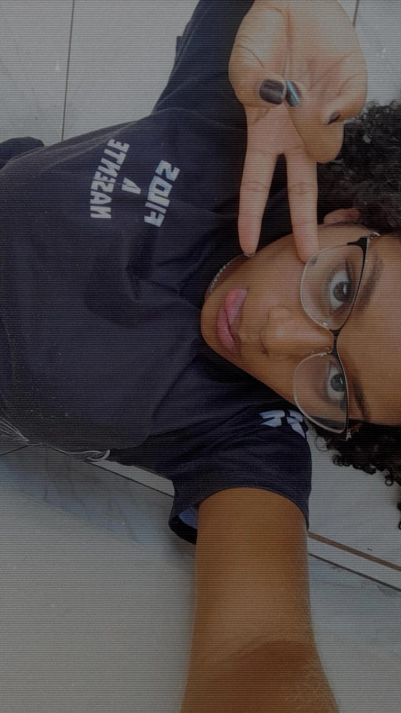

Para a mulher mais incrível desse mundo...


.gif)
A mulher mais incrível...
Ei gatinha, eu sei que as coisas devem está muito pesadas, vc está tristinha, talvez por que se sinta sozinha ou por coisas que as vezes nem a gente mesmo consegue explicar, só quero te dizer que você nunca está sozinha, eu estou aqui e sempre estarei. Bom sei que as vezes eu não sou um bom namorado sei que as vezes piso na bola, mas eu sempre quero te ver feliz como dizia o chorão "tá tudo bom pra ela então tá tudo bom pra mim". Quero também te dizer o quanto eu te acho incrível, seus cachinhos, seus olhinhos, seu sorrisinho (mesmo quando tímido), e talvez você nem perceba isso o quanto você é incrível e ilumina tudo ao seu redor, você é mais brilhante que a lua e o sol e até as outras estrelas. Disse que não é merecedora de ter amigos, isso não é verdade gatinha, vc é merecedora sim, como alguém tão incrível e tão especial como você não é merecedora de amigos?? Você é merecedora de tudo, é a garotinha que quero ver todos os sonhos serem realizados, até por que um dos meus sonhos é ver você feliz. E então gatinha se quiser contar comigo saiba que você nunca está sozinha e apesar de eu as vezes não ser um cara perfeito eu sempre estou aqui só quero que saiba disso. Bom tenho coisas pra dizer, e o coelhinho? Sua mamãe vai deixar? Bom eu quero muito te dá um baixinho assim seria o máximo, seria tipo um bichinho de pelúcia vivo kkkkkkkkkmmkm, espero a sua resposta. Bom eu sei que disse que sua semana vai está bem cheia e eu entendo, mas agora que estou de férias queria fazer algo legal com você na semana, bom, seu dia vai está bem cheio então que tal a noite? A gente sai pra lanchar ou come uma pizza o que acha? Faz tipo aquele desenho lá que vc pintou e ficou perfeito, a gente pode até assistir um filminho no dia. Bom gatinha caso tenha percebido essa foi a primeira atualização do seu sitezinho e tive uma ideia quem sabe eu possa colocar uma caixa de texto para vc responder coisas também??? Acho que ficaria legal. Bom então a primeira atualização foi essa eu fiz isso mesmo para te dizer essas coisinhas e também como todas as vezes.... Para dizer o quanto eu te amo gatinha, eu te amooooooo muito muito mesmo, beijos gatinha que Deus te proteja :)
Poemas que de alguma forma eu encontrei e escolhi para você:
Morena, és bela como o céu da tarde
Teus olhos negros têm luz de mistério
Teu riso brilha, qual sol verdadeiro
Na curva doce dos lábios que arde
Teu corpo dança em leve cântico etéreo
E o amor em mim por ti jamais se tarde
És minha musa, meu sonho sincero
Autor
Teu rosto é mais que a lua cheia
Um riso claro que o céu não tem
Morena, teu encanto me enfeitiça
E a noite perde seu velho bem
Teus olhos brilham, a lua empeça
Tua graça é flor que ninguém contém
És mais perfeita que o astro além
Autor
Morena, teu riso é mais que a lua
Um mar de encantos que me inunda
Teus cachos dançam como ondas
E a noite, pálida, se confunda
Teu rosto brilha, o céu se cala
A lua é só um eco mudo
Tua graça canta, leve e pura
Menina-mar que o vento embala
És mais que o astro, és tudo
Autor
És única entre as coisas finas
Teu jeito é um mundo que se cria
Ninguém te copia, ninguém te alcança
És pedra rara na minha via
Não há troca que me convenha
Nem ouro, nem céu, nem fantasia
Mulher, és tu, só tu, minha ânfora
De ti me encho, e vivo em alegria
Autor
Quero-te para o meu destino
Casar contigo é minha sina
Um futuro claro nos espera
Com filhos correndo na campina
Teu amor é o certo, o inteiro
Que me guia por esta estrada
Não há dúvida, nem receio
Seremos um, na vida alçada
E o tempo dirá que é verdade
Autor
Quando brigamos, meu peito geme
Uma dor funda me corta o ar
É como se o mundo se perdesse
E o coração doesse sem parar
Mas quando o amor nos abraça
Minha alma canta, livre e inteira
Vibra em mim a luz da tua graça
E o viver se faz primavera
Autor
Não te amo por teu rosto
Nem por teu corpo em flor
Amo-te pela alma
Que em silêncio me chama
És luz que não se vê
Um canto sem fim
Teu ser me prende a mim
E nele eu sou quem é
Autor
Músiquinhas que o meu amor gosta:
Aqui estão algumas músicas que você ama, e em breve adiconarei mais musiquinhas.
-
Lana Del Rey - Video Games
-
Bon Jovi - Always
-
Bonnie Tyler - Total Eclipse of the Heart
-
Na linha do tempo
-
20 - ligações
-
Can Help Falling in Love
-
Heaven
Filminhos que a minha princesa ama:
Aqui colocarei os seus filminhos preferidos :)
Studio Ghibli :)
1. Meu Amigo Totoro
2. A Viagem de Chihiro
3. O Castelo Animado
4. Princesa Mononoke
5. Túmulo dos Vaga-Lumes
6. O Conto da Princesa Kaguya
7. Nausicaä do Vale do Vento
8. O Menino e a Garça
9. Memórias de Ontem
10. Ponyo - Uma Amizade que Veio do Mar
11. Vidas ao Vento
12. Porco Rosso: O Último Herói Romântico
13. As Memórias de Marnie
14. Da Colina Kokuriko
15. Sussurros no Coração
16. O Mundo dos Pequeninos
17. PomPoko: A Grande Batalha dos Guaxinins
18. Meus Vizinhos, Os Yamadas
19. O Serviço de Entregas da Kiki
20. Eu Posso Ouvir o Oceano
21. O Castelo no Céu
22. O Reino dos Gatos
23. Contos de Terramar
24. Aya e a Bruxa